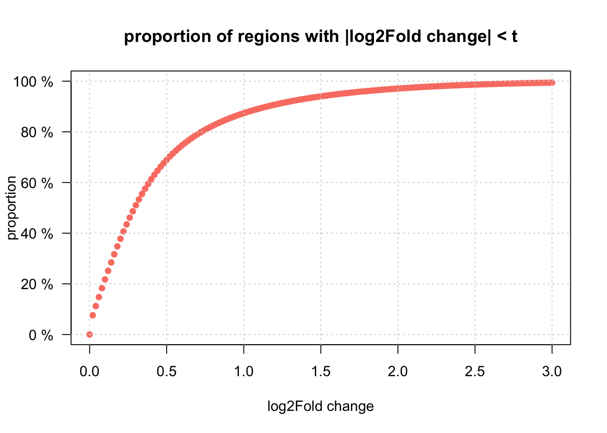
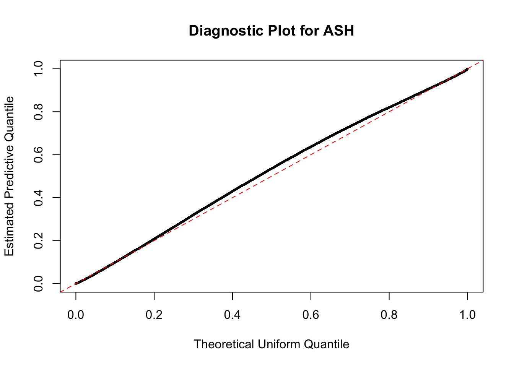
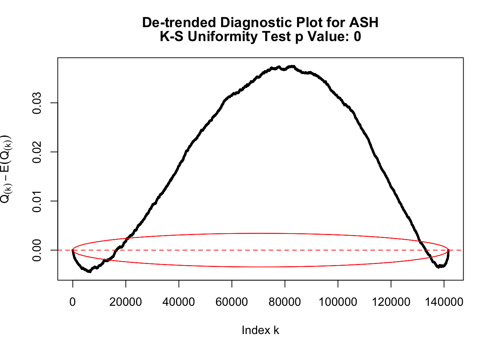
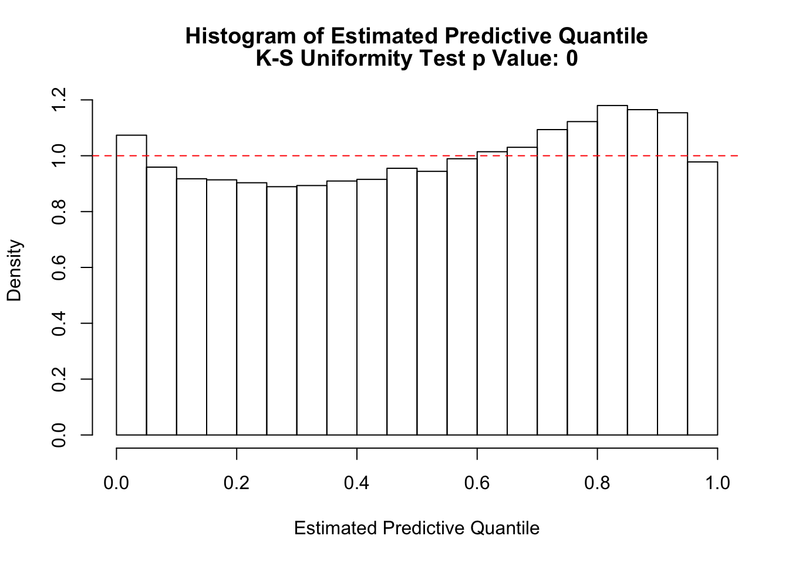

deseq2 <- read.table("../data/for_ashr.txt", header=T)
dim(deseq2)## [1] 141642 9head(deseq2)## hchr hstart hend peak.name.1 log2FoldChange lfcSE stat
## 1 chr1 1028832 1030126 Peak65 0.58181403 0.3317012 1.7540308
## 2 chr1 1030567 1031726 Peak66 0.92756214 0.2780281 3.3362167
## 3 chr1 1083633 1084239 Peak70 -2.37991377 0.4830720 -4.9266233
## 4 chr1 1087539 1091791 Peak71 0.23851999 0.1746948 1.3653528
## 5 chr1 1109999 1111262 Peak72 -0.37246716 0.3185293 -1.1693342
## 6 chr1 1124819 1131339 Peak74 -0.03641734 0.1386814 -0.2625971
## pvalue padj
## 1 7.942523e-02 2.331886e-01
## 2 8.492694e-04 7.811183e-03
## 3 8.366284e-07 1.983956e-05
## 4 1.721422e-01 3.803898e-01
## 5 2.422690e-01 4.680365e-01
## 6 7.928612e-01 8.974144e-01betahat <- deseq2$log2FoldChange
sebetahat <- deseq2$lfcSE
#deseq2.fit <- ashr::ash(betahat, sebetahat, mixcompdist = "normal", outputlevel=2)
#save(deseq2.fit, file="deseq2.fit.normal.RDS")
deseq2.fit <-readRDS("deseq2.fit.normal.RDS") # the above step may take long without REBayest<-seq(0,3,0.02)
prop <- ashr::cdf.ash(deseq2.fit, t)$y - ashr::cdf.ash(deseq2.fit, -t)$y
plot(t,prop, main= "proportion of regions with |log2Fold change| < t", xlab= "log2Fold change", ylab="proportion", yaxt="n", pch = 16, col="salmon", ylim=c(0,1))
xat = pretty(runif(10))
axis(2, at=xat, lab=paste0(xat* 100, " %"), las=TRUE)
grid()
plot_diagnostic(deseq2.fit)
## Press [enter] to see next plot
## Press [enter] to see next plot
This R Markdown site was created with workflowr